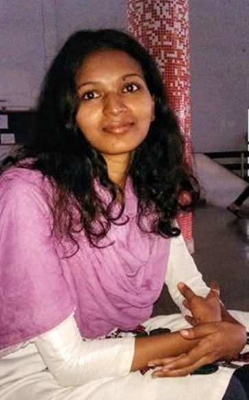
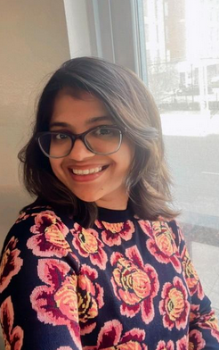

Our Team
Meet the researchers driving innovation in the Cellulose and Composite Group.

Sukesh Kumar
Joint Doctoral Scholar
IIT Hyderabad & Swinburne University of Technology
Project: Multi-physics Analysis of PEDOT:PSS-Bacterial Cellulose Bilayer Actuator
About: Sukesh is driven by a deep interest in how semiconducting polymers and electrochemistry can be harnessed to create life-like motion in soft systems. By combining biocompatible natural polymers with electronic functionality, he explores how soft actuators can transition from laboratory curiosities to practical components of smart, responsive devices. His work reflects a broader passion for materials that bridge biology and electronics, with the potential to redefine the future of soft robotics and bio-integrated technologies.
Email: ms20resch11003@iith.ac.in

Peddapappanagari Kalyani
Ph.D. Scholar
IIT Hyderabad
Project: Bacterial Cellulose-Based Drug Delivery Systems for Differently Soluble Drugs: Applications in Implants and Transdermal Therapy
About: PPG Kalyani is a biomaterials researcher passionate about developing innovative drug delivery platforms. Her current work centers on bacterial cellulose-based implants and transdermal controlled drug delivery systems designed for both water-soluble and water-insoluble drugs. She envisions biomaterials as active enablers of patient-centric and sustainable healthcare solutions, extending her interests to implant systems, polymer matrices, pharmacokinetics, degradation studies, and even eco-friendly food packaging.
Email: kalyani@iith.ac.in

Aszad Alam
Joint Doctoral Scholar
IIT Hyderabad & Swinburne University of Technology
Project: Bacterial Cellulose-Based Magnetic Drug Delivery Systems for Cancer Treatment
About: Aszad is a joint doctoral scholar with IIT Hyderabad and Swinburne University of Technology (Australia), focusing on nanomaterials for advanced biomedical applications. He enjoys working on “interactions at the nanoscale” as a pathway to design efficient and responsive drug delivery systems. His research focuses on the attachment, assembly, and distribution of inorganic and organic nanoparticles on nanofibrous bacterial cellulose to create magnetic platforms for targeted cancer therapy. By combining the versatility of bacterial cellulose with the precision of nanoscale engineering, he envisions drug delivery systems that are not only effective but also tailored to improve patient outcomes in cancer treatment.
Email: aszad@iith.ac.in
Aditya Syamala
Ph.D. Scholar
Project: Bacterial Cellulose-Based Magnetic Drug Delivery Systems for Cancer Treatment
About: Aditya Syamala is a doctoral researcher intrigued by how surfaces can be engineered to control the behavior of water. He enjoys working at the interface of materials science and sustainability, developing functional surfaces with tunable wettability for applications in atmospheric water harvesting, anti-biofouling, and self-cleaning technologies. His work focuses on designing and engineering hydrophobic, hydrophilic, and slippery liquid-infused porous surfaces to precisely control liquid interactions. Through this approach, he aims to develop sustainable solutions for efficient water collection and surface protection, advancing materials that address both environmental and industrial challenges.
Email: aditya@iith.ac.in

Anurag Kumar
Joint Doctoral Scholar
IIT Hyderabad & Deakin University
Project: High-Performance Functional Fibers From Bacterial Cellulose
About: Anurag is a joint doctoral scholar with IIT Hyderabad and Deakin University (Australia). He explores the art and science of transforming bacterial cellulose, a remarkable biopolymer, into high-performance, functional fibers. His work focuses on creating fibers that are not only strong and tough but can also be tailored for applications ranging from surgical sutures to soft robotics. He fine-tunes bacterial cultures to produce spinnable hydrogels and experiments across the spectrum, from gels to liquid crystalline suspensions, to develop fibers that translate nanoscale mechanics to the macroscale. Inspired by nature’s master weavers, such as spiders, he optimizes the spinning process to craft fibers that combine strength, flexibility, and functionality. Ultimately, his research aims to harness biology to create materials that perform, adapt, and inspire innovation. Recently, he has been attempting to “communicate” with the bacteria to better understand how they construct such remarkable fibers.
Email: anurag@iith.ac.in
Parnika P
Ph.D. Scholar
Project: Unlocking the Potential of Bacterial Nanocellulose as Cathode Host for Metal Sulfur Batteries.
About: Parnika is a researcher working at the intersection of electrochemistry and energy storage systems. Her work focuses on utilizing bacterial nanocellulose as a sustainable cathode host for metal sulfur batteries, an alternative to conventional lithium-ion batteries. By engineering carbon nanofiber-based structures derived from bacterial cellulose, she aims to overcome challenges such as low conductivity and polysulfide shuttling, ultimately contributing to high-performance, cost-effective, and eco-friendly energy storage solutions.
Email: parnika@iith.ac.in
Spandana
Ph.D. Scholar
Project: Design and Fabrication of High Entropy Shape Memory Alloys
About: Spandana is a researcher exploring high entropy shape memory alloys, a new class of smart materials that combine exceptional structural and functional properties. She is particularly interested in designing these alloys for high-temperature applications and advanced functional uses, where both phase transformation behavior and mechanical performance play a vital role. Beyond their structural promise, she also collaborates with the bacterial cellulose group to investigate how these alloys interact with microorganisms, carrying out antifouling studies that open pathways for biomedical and marine applications. Her work is supported by the DRDO Young Scientists Laboratory for Smart Materials, reflecting her broader commitment to developing materials that are versatile, adaptive, and impactful across multiple domains.
Email: spandana@iith.ac.in

Sukriti Gangwar
Ph.D. Scholar
Project: Tailoring Porosity and Surface Wettability in Bacterial Cellulose Hydrogel
About: Sukriti is intrigued by the fundamental role of porosity and wettability in bacterial cellulose hydrogels. Her research focuses on utilising reliable methods to measure pore size, shape, and distribution, as well as devising ways to tune these properties for application-specific performance.
Email: sukriti@iith.ac.in
Sarita C
Ph.D. Scholar
Project: Development of a Bacterial Cellulose-based Microfluidic Device for Antibiotic Susceptibility Testing
About: Sarita C is a doctoral scholar working on bacterial cellulose–based microfluidic devices for antibiotic susceptibility testing. Her research focuses on transforming freeze-dried bacterial cellulose into patterned, biodegradable platforms that can confine fluids and enhance the interaction between antibiotics and bacterial cells. With an emphasis on simplicity, reliability, and sustainability, her work aims to create accessible point-of-care diagnostic tools to address the growing challenge of antimicrobial resistance. Her project is supported by the Science and Engineering Research Board (SERB-CRG).
Email: sarita@iith.ac.in

Dr. Jiji Swaminathan
Post-doctoral Fellow
Project: Biodegradable Self-Sanitizing Bacterial Nanocellulose Fabrics for Air and Water Filtration and Exploring BC Microbeads for Micronutrient Delivery in Sustainable Agriculture
About: Dr. Jiji Swaminathan works on developing bacterial cellulose-based eco-friendly materials for healthcare, environmental, and agricultural applications. She completed her Ph.D. at DRDO-BU-CLS, Bharathiar University, Tamil Nadu, where she focused on bacterial cellulose for third-degree burn wound dressings. She later pursued a postdoctoral fellowship at the University of Louisville, USA, investigating recombinant protein therapies for ulcerative colitis. Her current research explores biodegradable self-sanitizing bacterial nanocellulose fabrics for air and water filtration, as well as bacterial cellulose microbeads for controlled micronutrient delivery in sustainable agriculture. Her project is supported by the National Technical Textiles Mission (NTTM).
Email: jiji@iith.ac.in

Dr. Akhila Konala
Post-doctoral Fellow
Project: Circular Agro-Tech for Nutritional Security: Agricultural Waste–Derived Materials for Active and Smart Fresh Food Packaging for Enhanced Shelf Life
About: Dr. Konala Akhila is a sustainability enthusiast, with expertise in packaging, biopolymers, and smart materials. She has pursued her Ph.D. from IIT Roorkee on smart and sustainable food packaging. She is currently working on large scale production of bacterial cellulose from agri waste to support circular agro-tech and employing the BC as a microplastic free and amphiphilic biodegradable packaging for smart food packaging.
Email: akhila@iith.ac.in